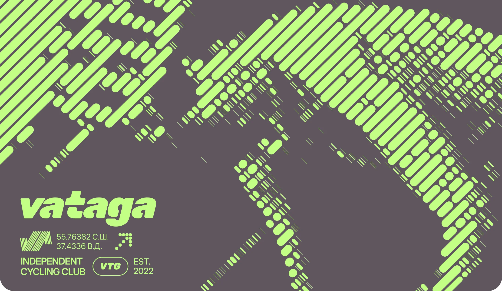
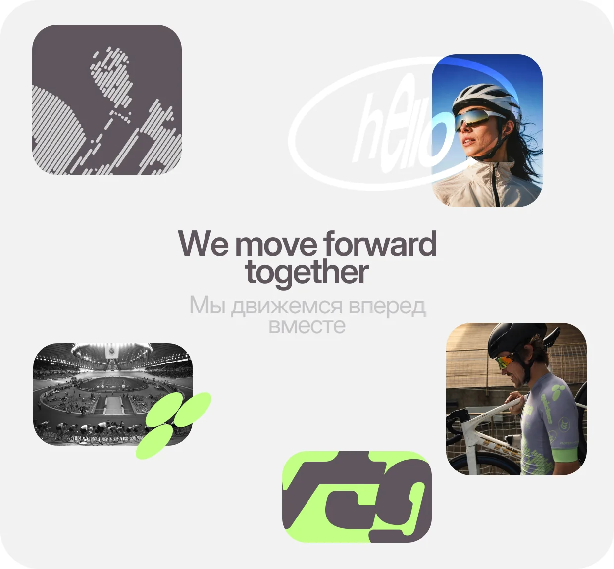
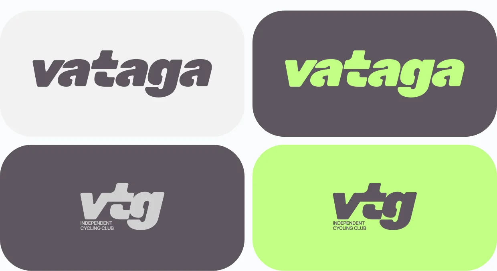
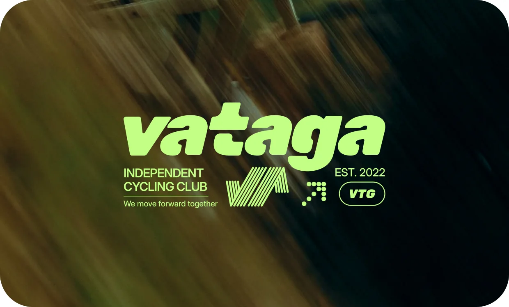
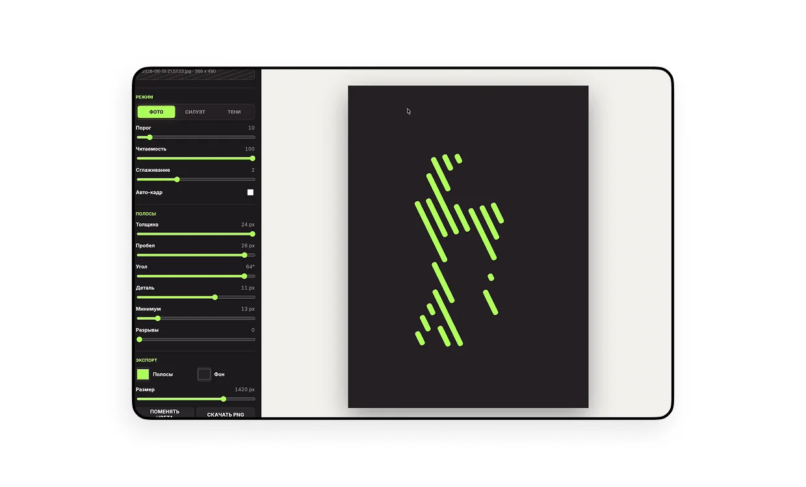
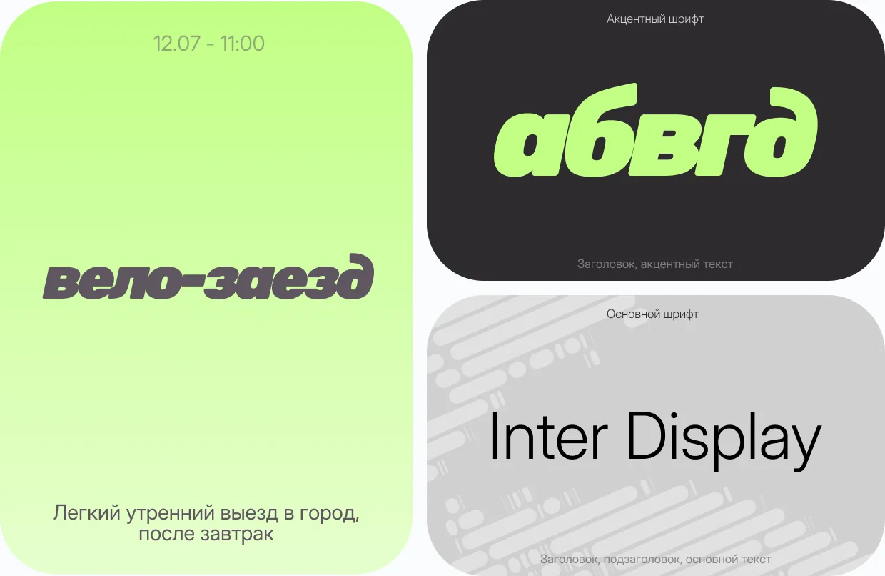
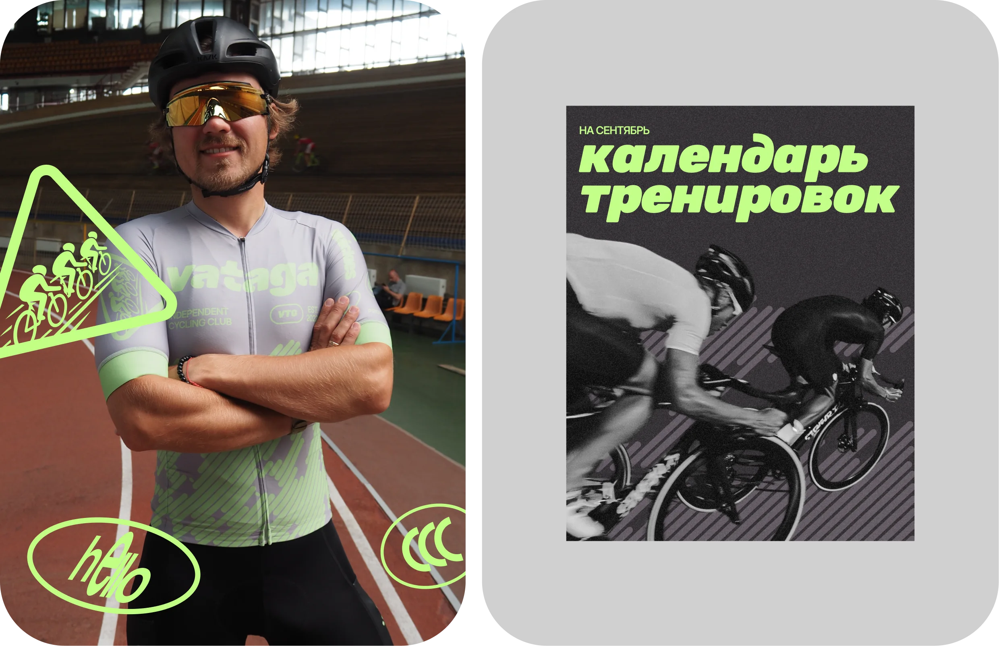
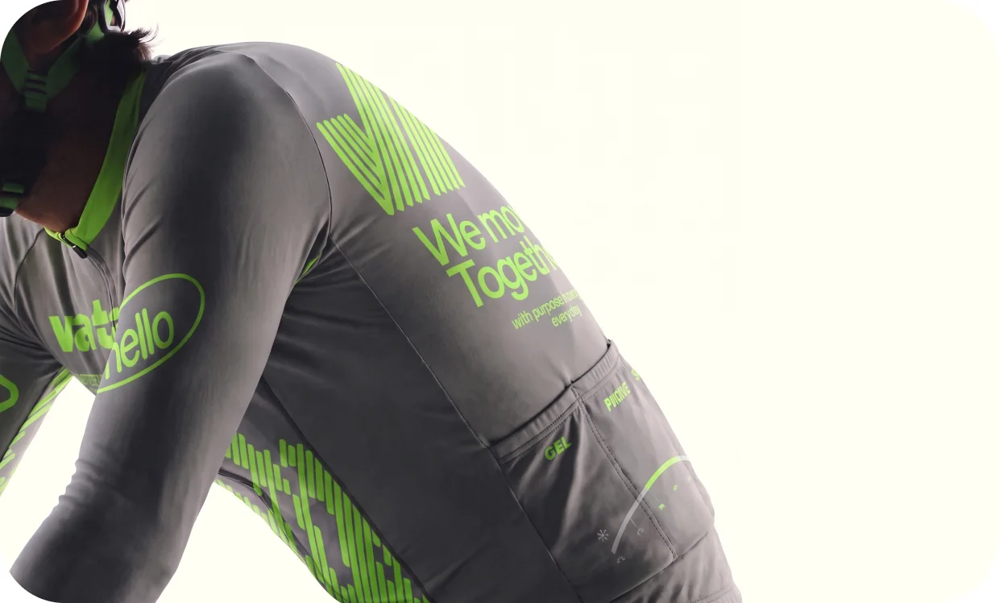
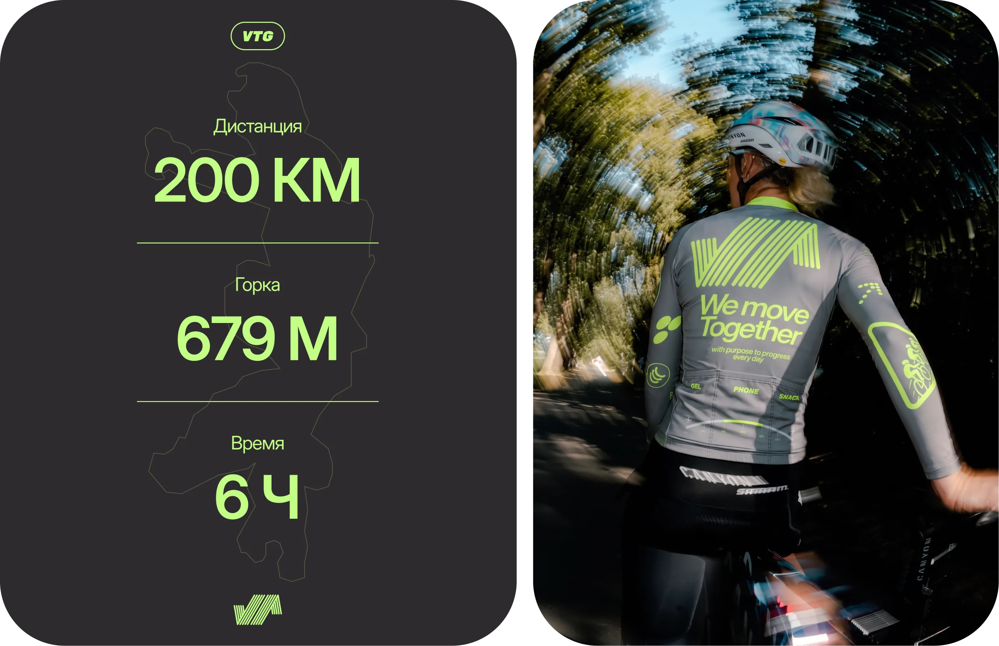

Vataga
Introduction
Vataga — независимый велоклуб про регулярные тренировки, групповые выезды, дисциплину и ощущение команды. Визуальный язык строится на ритме, маршруте и движении в одном потоке
Services
Tools








Скоро будет продолжение